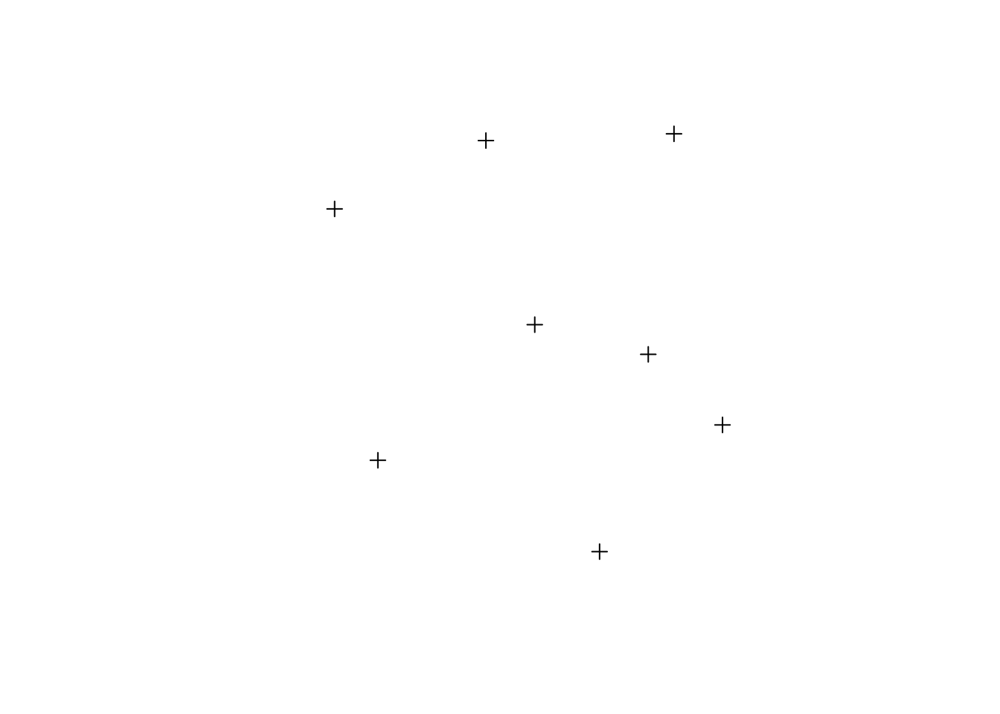
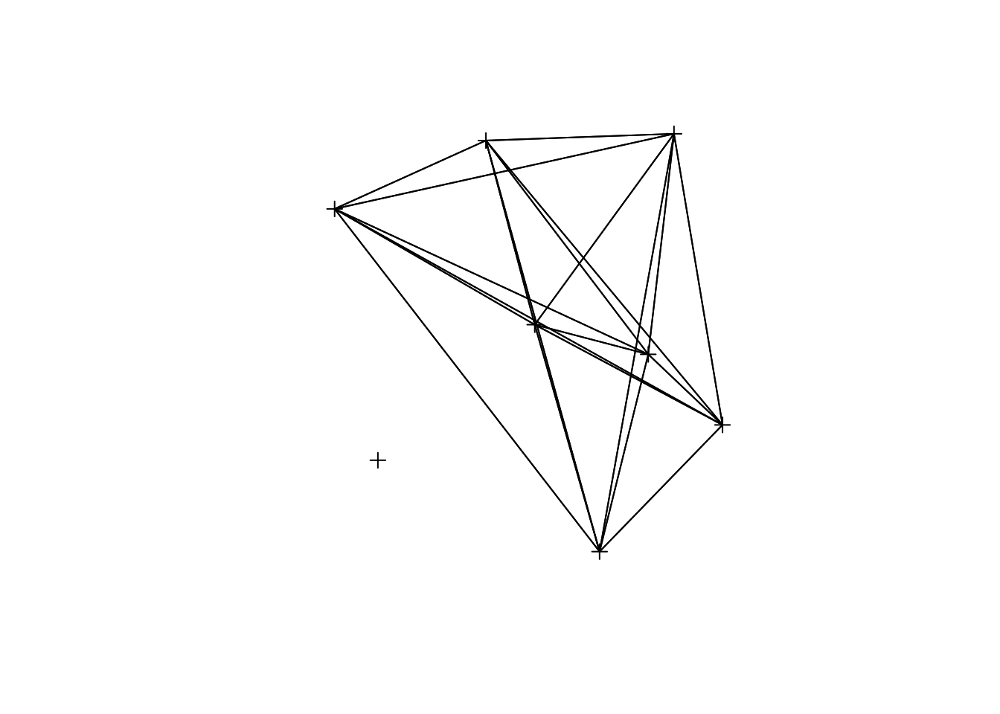
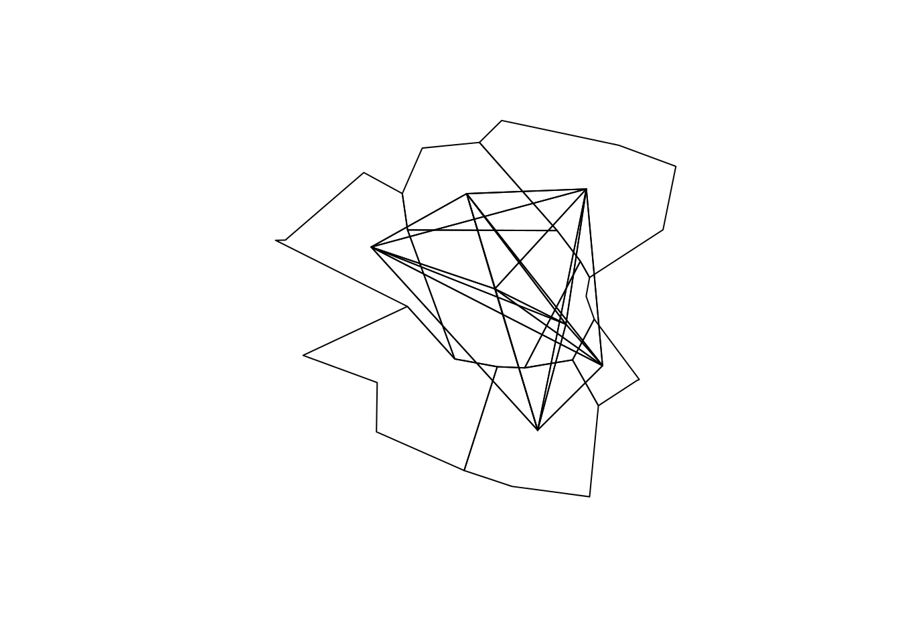
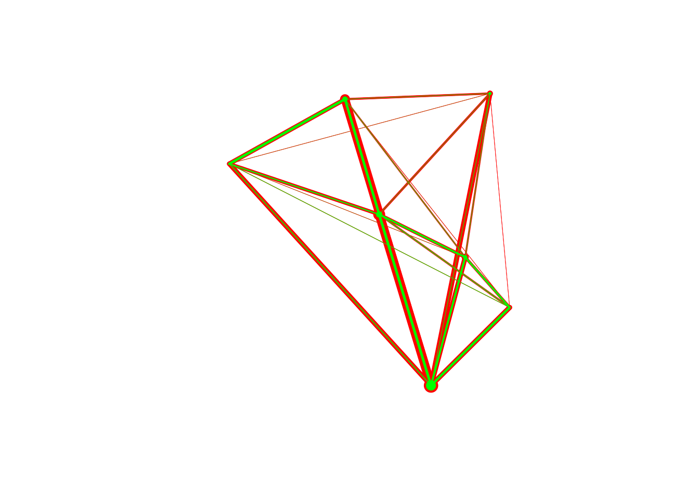
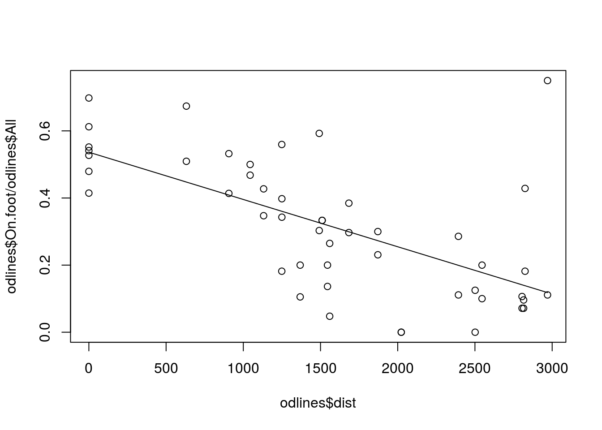
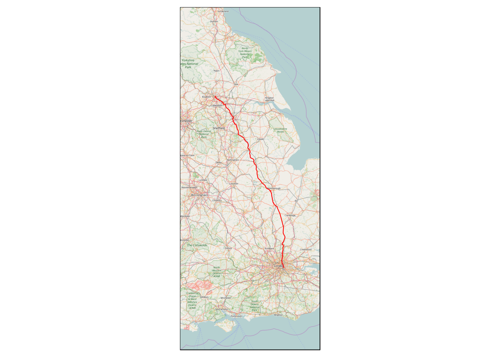
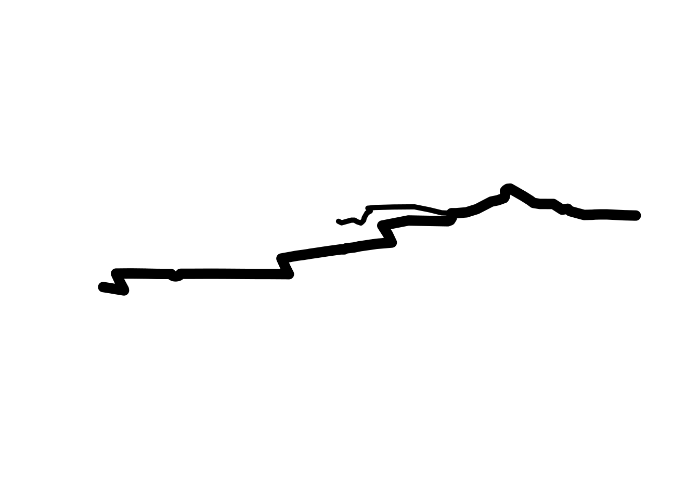
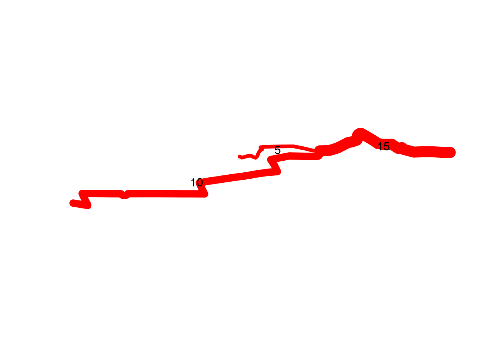
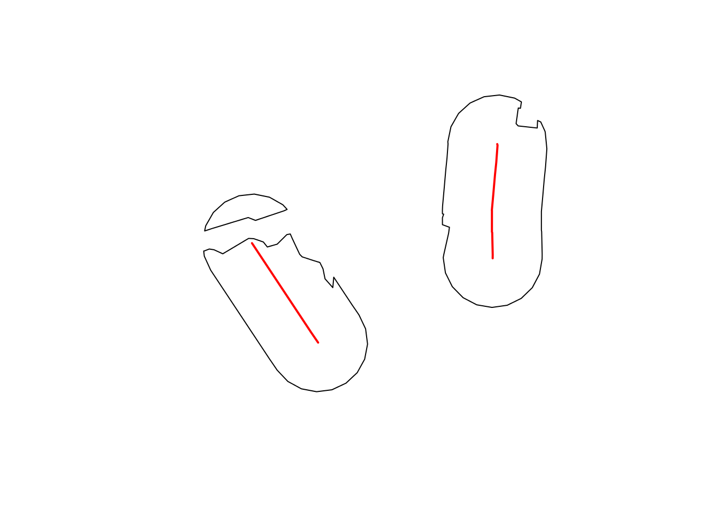
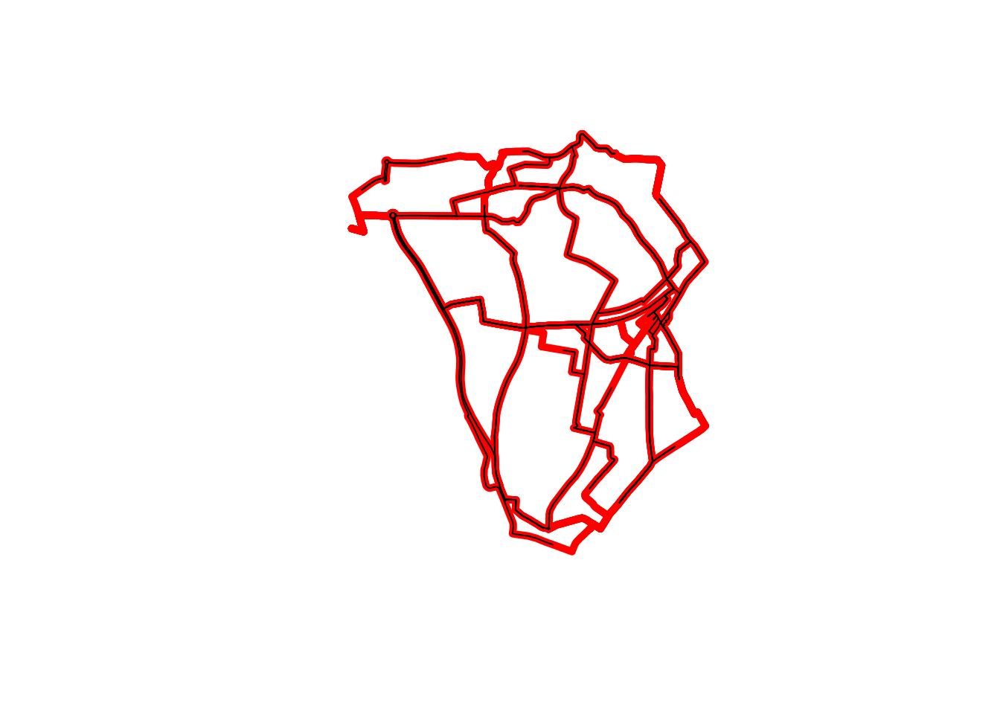

Version 0.1.1 of the package stplanr has been released on CRAN. This is a major update with many new functions and a new class definition, SpatialLinesNetwork, for route planning and network analysis using igraph.
This short post, by myself and package co-author Richard Ellison describes how stplanr can be used for transport research with a few simple examples from the package documentation. We hope that stplanr is of use to transport researchers and practitioners worldwide and encourage contributions to the development version hosted on GitHub.
Origin-destination (OD) data is one of the basic data sources for understanding travel behaviour. Usually OD data in R is represented by a table containing at least the following columns:
Additional columns can provide a break-down by trip type such as by mode of travel (e.g. car) and time of day. A sample of this data (also referred to as ‘Flow data’ by some statistical organsiations) is provided in the example dataset flows, as illustrated in the Table below.
library(stplanr)## Loading required package: splibrary(tmap)
data("flow")
knitr::kable(flow[1:3,c(1, 2, 3, 13)])| Area.of.residence | Area.of.workplace | All | On.foot | |
|---|---|---|---|---|
| 920573 | E02002361 | E02002361 | 109 | 59 |
| 920575 | E02002361 | E02002363 | 38 | 4 |
| 920578 | E02002361 | E02002367 | 10 | 1 |
To link this data to geographical space we use a dataset stored as a SpatialPointsDataFrame from the sp package in cents:
data(cents)
plot(cents)
To link the flow data we can use the command od2line() to create SpatialLinesDataFrame:
odlines <- od2line(flow = flow, zones = cents)
plot(cents)
plot(odlines, add = TRUE)
Note that the function also accepts a SpatialPolygonsDataFrame as an input by setting the line start and end point to the zone’s geographic centroid:
odlines <- od2line(flow = flow, zones = zones)
plot(zones)
plot(odlines, add = TRUE)
To gain a basic understanding of the rate of travel in this simple travel system, we can plot the odlines with width proportional to the number of people travelling:
plot(odlines, lwd = odlines$All / mean(odlines$All) * 3, col = "red")
plot(odlines, lwd = odlines$On.foot / mean(odlines$All) * 3, col = "green", add = T)
In the resulting plot the total rate of travel is represented by the width of red lines. The proportion of people who walk is illustrated by the relationship between the width of the green and red lines. We can use this data to explore the relationship between walking and distance:
odlines <- spTransform(odlines, CRS("+init=epsg:27700"))
odlines$dist <- rgeos::gLength(odlines, byid = T)
plot(odlines$dist, odlines$On.foot / odlines$All)
# fit a model to the curve
m <- lm(On.foot / All ~ dist, odlines@data)
lines(odlines$dist, m$fitted.values)
summary(m)##
## Call:
## lm(formula = On.foot/All ~ dist, data = odlines@data)
##
## Residuals:
## Min 1Q Median 3Q Max
## -0.26915 -0.06987 -0.00694 0.06190 0.63195
##
## Coefficients:
## Estimate Std. Error t value Pr(>|t|)
## (Intercept) 5.365e-01 4.503e-02 11.915 8.36e-16 ***
## dist -1.409e-04 2.501e-05 -5.633 9.64e-07 ***
## ---
## Signif. codes: 0 '***' 0.001 '**' 0.01 '*' 0.05 '.' 0.1 ' ' 1
##
## Residual standard error: 0.1585 on 47 degrees of freedom
## Multiple R-squared: 0.403, Adjusted R-squared: 0.3903
## F-statistic: 31.73 on 1 and 47 DF, p-value: 9.638e-07This is useful information: we can see a clear negative relationship between the distance of the trip (in metres) and the proportion who are willing to make the journey on foot.
stplanr includes functions for allocating OD pairs to the transport network, including route_cyclestreet(), route_graphhopper() and, most rececently viaroute() which provides an R interface to the superfast OSRM routing API. This is useful because roads rarely take you directly from origin to destination, as illustrated below for the trip from Leeds to London attend the upcoming GISRUK conference:
route <- route_cyclestreet("Leeds", "Greenwich")
library(tmap)
tiles <- read_osm(bb(route, ext = 2))
tm_shape(tiles) +
tm_raster() +
tm_shape(route) +
tm_lines()
We can allocate all of the OD pairs in odlines to the transport network using these functions. The routes_fast dataset, for example, was created using line2route() and represents the rastest route that a cyclist may take, according to the CycleStreets.net API. A sample of this dataset is illustrated below:
routes_fast$weight <- c(5, 10)
plot(routes_fast[1:2,], lwd = routes_fast$weight)
Note that there is some overlap between the two lines above. It is sometimes useful to take aggregate statistics for the attributes of overlapping lines, for example to estimate the number of people using any particular part of the transport network. This can be acheived using Barry Rowlingson’s function overline():
rnet <- overline(routes_fast[1:2,], attrib = "weight", fun = sum)Note that in the above plot the final segment to the east has a weight value that is the sum of the two overlapping lines in routes_fast[1:2,]: 5 + 10 = 15. We can verify this with Barry’s neat function
plot(rnet, lwd = rnet$weight, col = "red")
lineLabels(rnet, "weight")
There are many other functions designed to help transport researchers in stplanr. These include:
read_stats19* functions which import and format UK ‘Stats19’ road traffic casualty datacalc_catchment* functions for calculating transport ‘catchment areas’ using buffers around transport facilitiesgtfs2sldf() for reading-in Google’s GTFS format into Rtoptail* functions for removing the beginning and ends of SpatialLines objectsThe use of the calc_catchment* functions can be illustrated using some simple data from Sydney showing the potential catchment of a possible separated cycle paths. First we import the data that we want to use:
library(rgdal)## rgdal: version: 1.1-3, (SVN revision 594)
## Geospatial Data Abstraction Library extensions to R successfully loaded
## Loaded GDAL runtime: GDAL 1.11.2, released 2015/02/10
## Path to GDAL shared files: /usr/share/gdal/1.11
## Loaded PROJ.4 runtime: Rel. 4.8.0, 6 March 2012, [PJ_VERSION: 480]
## Path to PROJ.4 shared files: (autodetected)
## Linking to sp version: 1.2-2data_dir <- system.file("extdata", package = "stplanr")
unzip(file.path(data_dir, 'smallsa1.zip'))
unzip(file.path(data_dir, 'testcycleway.zip'))
sa1income <- readOGR(".","smallsa1") # Import some population data## OGR data source with driver: ESRI Shapefile
## Source: ".", layer: "smallsa1"
## with 638 features
## It has 19 fieldstestcycleway <- readOGR(".","testcycleway") # Import the path of the cycleways to test## OGR data source with driver: ESRI Shapefile
## Source: ".", layer: "testcycleway"
## with 2 features
## It has 2 fieldsWe can then use our population data and the path of the cycleways to estimate the population catchment for a given distance. If our population layer contains fields with multiple subsets of data for which we want to calculate the catchment area (e.g., men, women and children), we can calculate the individual catchments. For this example, we will simply use the ‘Total’ field containing the total population:
cycle_catchment <- calc_catchment(
polygonlayer = sa1income, # The SpatialPolygonsDataFrame containing the population data
targetlayer = testcycleway, # The Spatial* object containing the transport infrastructure of interest
calccols = c('Total'), # The columns to summarise
distance = 500, # The desired distance,
projection = 'austalbers', # The projection to use for calculating the area
dissolve = TRUE # Collapse all the population zones into a single polygon for the catchment
)
cycle_catchment$Total # Print the total catchment population## [1] 23944.32We can also plot the catchment area and the cycle paths. You will notice that in this example, there are gaps in the buffers. These gaps are because of the gaps in the population layer where Sydney harbour passes through the area. To take into account the road network and not simply straight-line distance, we can use the calc_network_catchment function.
plot(cycle_catchment)
plot(testcycleway, col="red", add=TRUE, lwd=2)
The toptail functionality is useful for removing the beginning and ends of SpatialLines, both for improving aestetchics of plots and for ensuring that lines do not overlap. This functionality is illustrated below using the routes_fast data.
proj4string(routes_fast) <- CRS("+init=epsg:4326")
rf_toptailed <- toptail(routes_fast, toptail_dist = 300)
plot(routes_fast, col = "red", lwd = 5)
plot(rf_toptailed, add = T)
The package vignette contains some further illustrations of stplanr‘s functions which we plan to improve on over time. While become almost ’industry standard’ in fields such as diverse as genetics, astronomy and epidemiology, R has received limited attention in transport planning. We believe that there is great potential for R, via new packages such as stplanr, to help solve real world transport problems such as estimating the geographical distribution of cycling potential.
The ‘sustainable’ in the package name relates to the emphasis on low-carbon modes in the package such as cycling and public transport. There is a huge amount of work to be done to plan for a transition away from fossil fuels in the sector, for health and environmental reasons. In this context we hope that software such as stplanr contributes to the evidence base needed to design better transport systems.